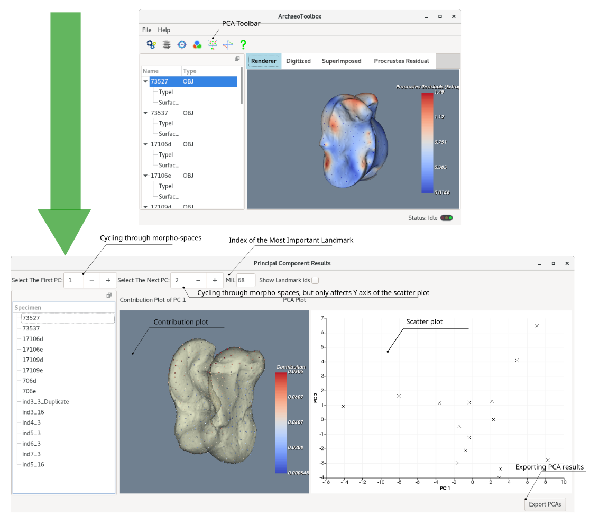

After the superimposition procedure is completed, given that more than two specimens were superimposed, you have an option to perform a principal component analysis. This will help you to understand which landmark affects the relevant morpho-space the most. This landmark is also called the most important landmark (MIL), and has the largest Eigenvalue. The PCA window also provides you with a scatter plot of PCA results and a contribution plot. The contribution plot and the MIL information are relevant to each morpho-space. You can browse morpho-spaces by a selection box: "Select the first PC". The other selection box ("Select the Next PC") will only affects the scatter plot (Y axis, to be more specific). You can export the PCA results as a .csv file by clicking the "Export PCs".
